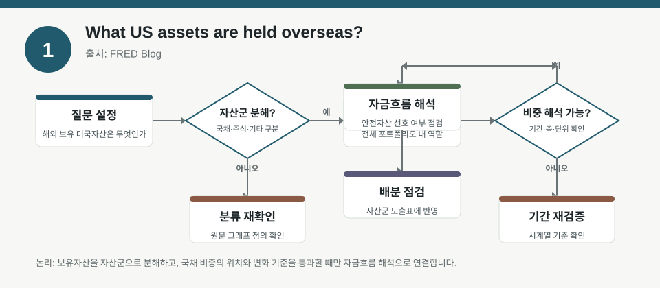
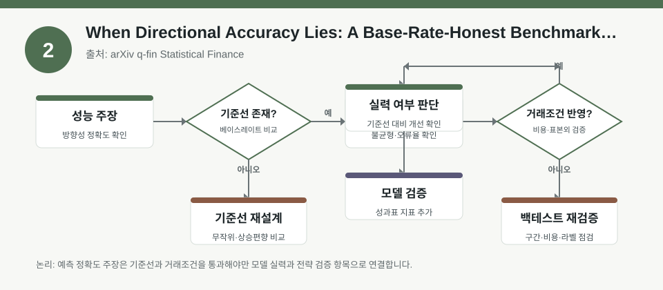
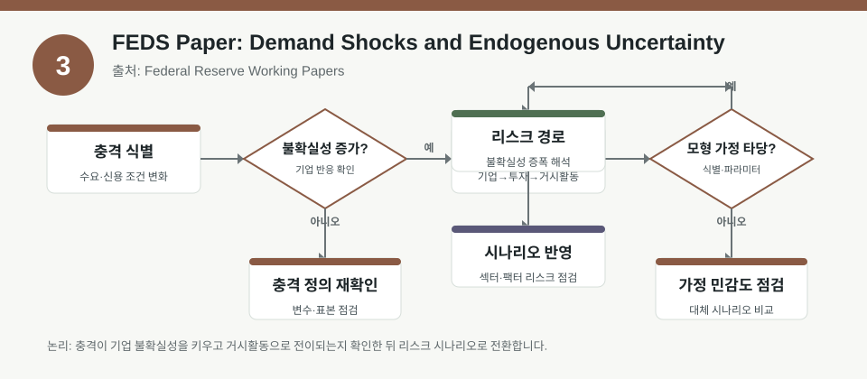

핵심 요약
- 결론: 해외 보유자산, 방향성 정확도, 내생적 불확실성을 함께 보면 팩터·포트폴리오 해석은 “맞췄는가”보다 “어떤 기준선과 리스크 가정으로 봤는가”가 더 중요합니다.
- 원칙: 수치형 시장 주장은 원문 메타데이터에 없으면 사실로 쓰지 말고, 검증 필요 항목으로 분리해 해석해야 합니다.
주목할 자료
| 번호 | 자료 | 출처 | 원문 | 핵심 내용 | 데이터 포인트 | 리스크/한계 |
|---|---|---|---|---|---|---|
| 1 | What US assets are held overseas? | FRED Blog | 원문 보기 | 해외가 보유한 미국 금융자산에서 국채의 위치를 포트폴리오 관점으로 해석 | 해외보유 자산 내 국채 비중, 자산군별 구성 확인 | 메타데이터에 구체 수치가 없어 그래프 기준과 시점은 원문에서 확인 필요 |
| 2 | When Directional Accuracy Lies: A Base-Rate-Honest Benchmark for LoRA-Adapted TimesFM on Equity Forecasting | arXiv q-fin Statistical Finance | 원문 보기 | 주가 예측에서 방향성 정확도만으로 성능을 판단하면 기준선 왜곡이 생길 수 있음을 점검 | 베이스레이트, 우연 기준선, 방향성 정확도 해석 | 약 80% 정확도 언급은 본문 맥락과 검증 설계 확인이 필요하며, 표본·비교군·비용 반영 여부가 핵심 |
| 3 | FEDS Paper: Demand Shocks and Endogenous Uncertainty | Federal Reserve Working Papers | 원문 보기 | 수요 충격과 신용 여건 변화가 기업 불확실성과 경기변동에 어떻게 연결되는지 모형으로 설명 | 기업 수준 불확실성, 이질적 기업, 신용 조건 충격 | 일반균형·불완전시장 가정의 강도가 크므로 실증 대응 범위와 파라미터 민감도 확인 필요 |
자료별 상세
1. What US assets are held overseas?

- 핵심: 해외 보유 미국자산을 볼 때 국채를 단독 자산이 아니라 전체 해외 포트폴리오의 한 구성요소로 읽어야 합니다.
- 데이터 포인트: 해외보유 자산 중 국채의 상대적 위치와 자산군별 배분이 핵심 해석 대상입니다.
- 리스크: 메타데이터에는 세부 비중과 기간 정보가 없어서 원문 그래프의 축, 기준시점, 집계 범위를 확인해야 합니다.
- 투자전략 반영 예시: 해외자금 흐름을 해석할 때 국채 편중 여부를 체크리스트로 두고, 통화·듀레이션·안전자산 선호 신호와 함께 교차검증할 수 있습니다.
- 실행 예시: 포트폴리오 점검표에 “해외보유 미자산 내 국채 비중 변화 여부”와 “동시기 다른 미국자산군의 상대 변화”를 함께 기록합니다.
2. When Directional Accuracy Lies: A Base-Rate-Honest Benchmark for LoRA-Adapted TimesFM on Equity Forecasting

- 핵심: 방향성 정확도는 베이스레이트가 높은 시장에서는 과대평가되기 쉬워, 예측모형 평가는 기준선 대비 개선 폭으로 봐야 합니다.
- 데이터 포인트: 우연적 적중률, 클래스 불균형, 비용 반영 전후 성과를 함께 보는 구조가 중요합니다.
- 리스크: 초기에 약 80% 정확도라는 표현은 본문 맥락, 표본 구간, 라벨 정의, 재현 절차를 검증해야 합니다.
- 투자전략 반영 예시: 모델 신호를 포트폴리오 의사결정에 넣을 때는 방향성 정확도보다 캘리브레이션, 거래비용, 리밸런싱 빈도까지 포함한 백테스트를 우선 검토할 수 있습니다.
- 실행 예시: 백테스트 표준안에 “무작위 기준선”, “항상 상승 예측 기준선”, “비용 포함 손익”, “샘플 외 구간”을 필수 비교항목으로 넣습니다.
3. FEDS Paper: Demand Shocks and Endogenous Uncertainty

- 핵심: 수요 충격과 신용조건 변화가 기업 불확실성을 키우고 경기순환을 증폭시킬 수 있다는 점을 모형으로 보여줍니다.
- 데이터 포인트: 기업 수준 불확실성, 위험회피적 기업, 이질적 충격, 거시 신용조건이 모형의 핵심 축입니다.
- 리스크: 일반균형과 불완전시장 가정이 강하므로, 실증 데이터가 어느 범위에서 모형을 지지하는지 확인해야 합니다.
- 투자전략 반영 예시: 경기민감 섹터 분석에서 실적 전망치보다 신용환경·수요 충격·불확실성 지표를 함께 점검하는 프레임으로 활용할 수 있습니다.
- 실행 예시: 리서치 템플릿에 “신용조건 변화”, “기업 불확실성 추세”, “수요 충격 민감도”를 별도 칸으로 두고 시나리오별로 기록합니다.
팩터·리스크·포트폴리오 관점
- 핵심: 세 자료 모두 팩터 신호의 겉모습보다 기준선, 가정, 포트폴리오 내 위치를 먼저 봐야 한다는 공통점을 줍니다.
- 검수: 수치와 성과를 인용할 때는 원문 메타데이터에 없는 값은 검증 대상로 두고, 표본·기간·비용·비교군을 확인해야 합니다.
정리
- 결론: 해외자산 구성, 예측모형 평가, 거시 불확실성은 각각 다르지만 모두 “해석 가능한 데이터 구조”를 점검해야 하는 자료입니다.
- 다음 확인: 원문에서 그래프 기준, 샘플 구간, 평가 지표 정의를 확인한 뒤 내부 백테스트 템플릿에 반영할 항목만 추려야 합니다.